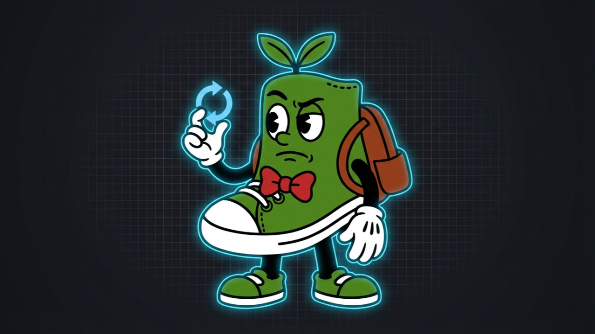

The Creative Shift December 31, 2025
2025 → 2026: The Shift Becomes the System
Opening Thought
Every creative era has a turning point. For us, that point was 2025.
This was the year creativity became codified: where the spark of inspiration met the structure of systems. AI didn’t erase originality. It exposed how much of creativity depends on direction, pattern, and precision.
The “Creative Shift” we’ve been talking about all year has now completed its first cycle. We’ve moved from exploring the tools to designing the frameworks. And 2026 will be the year those frameworks define who wins.
1. 2025 in Review: What Changed, and Why It Matters
Creative Systems Replaced Creative Chaos. The best teams stopped guessing. They built structured prompt libraries, voice templates, and repeatable workflows that multiplied quality, not just volume.
Behavioral Science Rejoined the Conversation. As AI handled automation, we returned to what truly drives performance: emotion, bias, and context. Strategy regained its psychological edge.
Brand Voice Became Data. The brands that stood out were the ones who could teach AI how to sound like them, consistently, across video, social, and copy.
Speed Found Its Ceiling—Strategy Broke Through It. Tools got faster. But creative direction (human clarity) became the bottleneck and the differentiator.
2. The System Ahead: What 2026 Demands
2026 won’t be about adoption. It’ll be about alignment. AI will fade into the background, becoming invisible infrastructure. The spotlight will return to creative leadership, those who can design harmony between human intent and machine intelligence.
Here’s what the next stage of The Creative Shift will focus on in 2026:
Modular Creative Systems that connect voice, visuals, and behavior.
AI Studios that function as living ecosystems, not production lines.
Behavioral Design Integration that shapes emotion and perception with precision.
Transparent, Ethical Creativity that earns trust in an era of synthetic everything.
The question for 2026 isn’t “How do we use AI?” It’s “How do we lead through it?”
3. A Personal Note: The Creative Director’s Role Redefined
We’re no longer just directors of campaigns. We’re architects of cognition, shaping how ideas move between humans and machines.
That’s what this community, this newsletter, and this journey have all been building toward: The evolution from creative direction to creative systems design.
The next era doesn’t need more output. It needs better orchestration.
For the Road
2025 taught us that creative mastery isn’t in what we make. It’s in how we design what makes it possible.
2026 will reward those who can turn their creativity into frameworks: people who can brief AI with empathy, structure chaos into rhythm, and lead with clarity through change.
This isn’t the end of The Creative Shift. It’s the moment it becomes what it was always meant to be: a system.
If your brand, team, or studio is ready to build its 2026 creative system (its voice, workflows, and behavioral strategy) let’s talk.
Connect with me here → https://www.linkedin.com/in/jschenck01
Portfolio: https://www.jeffschenck.com

Want this kind of thinking on your brand?
The Creative Shift is the thinking behind the client work. If you lead a brand and want this on your side of the table, let's talk.